CONCERTS
-
06 juin 2026 : Rouen(76) - Le comptoir des pirates - Youpoor

-
05 juin 2026 : Saint Dizier(52) - Les rencontres nationales d'Arboricultures
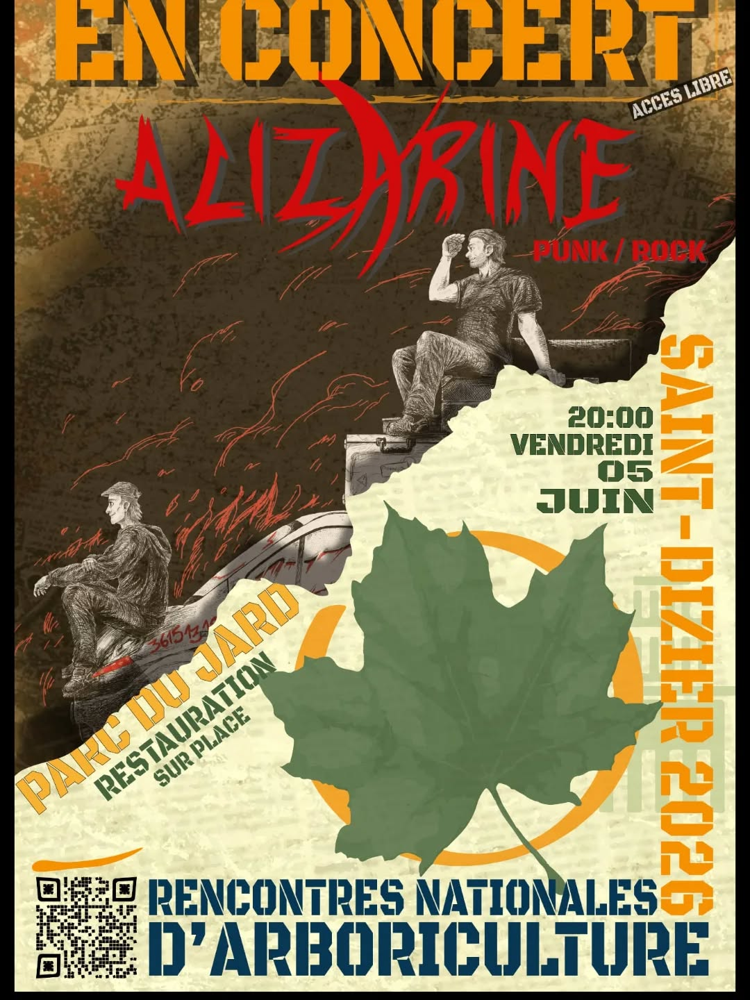
- 09 mai 2026 : Beaubray(27) - Max's Day
-
25 avril 2026 : Rosières(07) - Le Glandu

-
24 avril 2026 : Le Crès(34) - Spark of Omen, Deathgeist

-
04 avril 2026 : Les Barthes(82) - Les 10 ans du Moun's

- 27 septembre 2025 : Alençon(61) - Raffal Fest
-
23 août 2025 : Le Fidelaire(27) - L'Aliza'Fest#3

-
10 août 2025 : Auxi-le-château(62) - Chez Amandine - Tagada Jones, BÏUR

-
02 août 2025 : Breteuil s/ Iton(27)

-
17 juillet 2025 : Caen(14) - Utopistes Partout!, Jester

-
12 juillet 2025 : Logny les villages(61) - Jahmazonia - Natty, Jahmazonia Band

-
28 juin 2025 : St Just Sauvage - Bière sur zik(51) - Les shériff, Elmer Food Beat

-
21 juin 2025 : Compiègne(60) - Les Kroutes

-
20 juin 2025 : Beauvais(60) - NINH

- 14 juin 2025 : Dollon(72) - Semi fête de la musique
- 30 mai 2025 : Soirée Privée
-
03 mai 2025 : La Bonneville s/ Iton(27) - Faverock off#2 - Burning Head, Whereiskebab?

-
26 avril 2025 : La Bonneville s/ Iton(27) - Lutiae, Utopistes Partout!

-
19 avrilr 2025 : Peyrelevade(19) - Spark of Omen, Méga Culpa

-
15 avril 2025 : Rouen(76) - Youpoor

-
16 février 2025 : Le Fidelaire(27) - TAOS, Merrick

- 19 octobre 2024 : Chateaubranlant(72) - Sam's Day
-
05 octobre 2024 : Cahagnes(14) - Meuh'zik Festival

-
15 septembre 2024: La Ferté Vidame(28)

- 13 juillet 2024 : Verneuil s/ Avre(27)
-
24 août 2024 : Le Fidelaire(27) - L'Aliza'Fest#2

-
21 juin 2024 : Beaubray(27)

-
15 juin 2024 : Rennes(35) - TAOS, AB-Natural

-
26 avril 2024 : Rouen(76) - BÏUR, Amputees
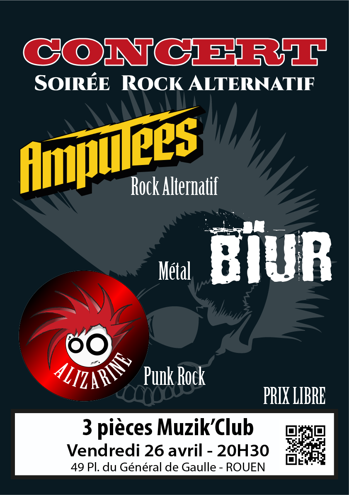
-
19 avril 2024 : Rouen(76) - TAOS, Nocturne
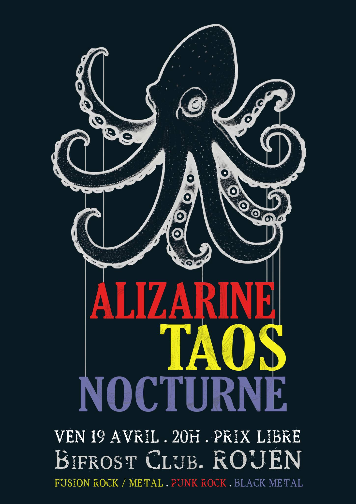
-
18 avril 2024 : Caen(14) - TAOS
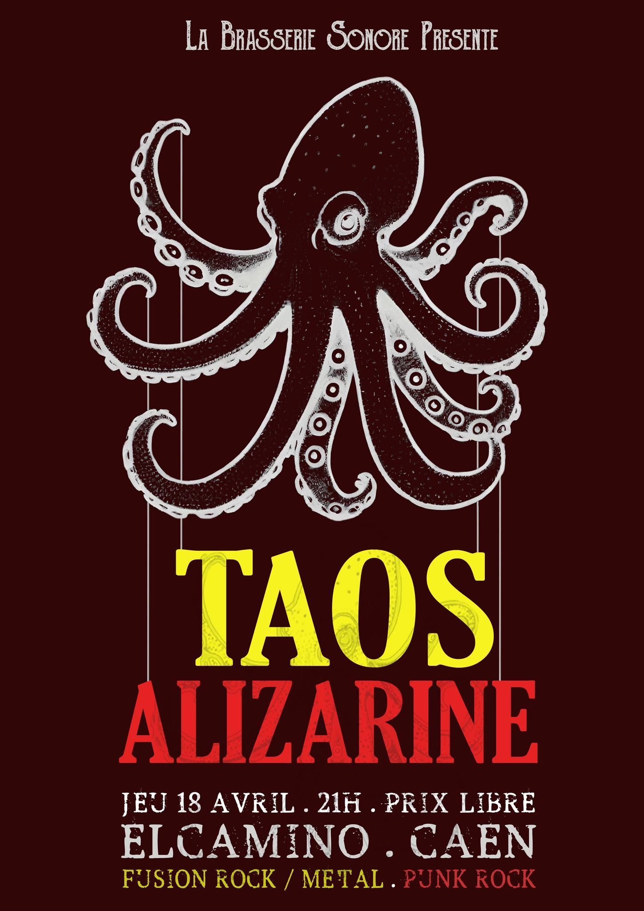
-
27 janvier 2024 : Rennes(35) - Keplair
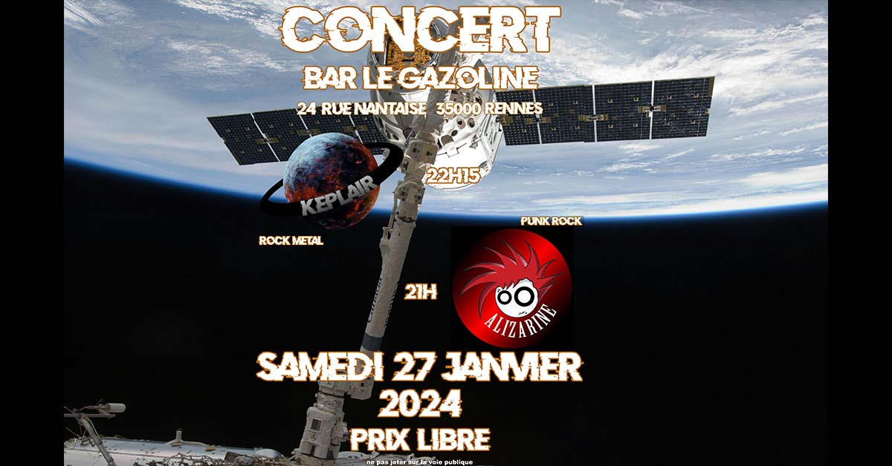
-
09 décembre 2023 : Verneuil s/ Avre(27) - Royal Casino, 33dogs
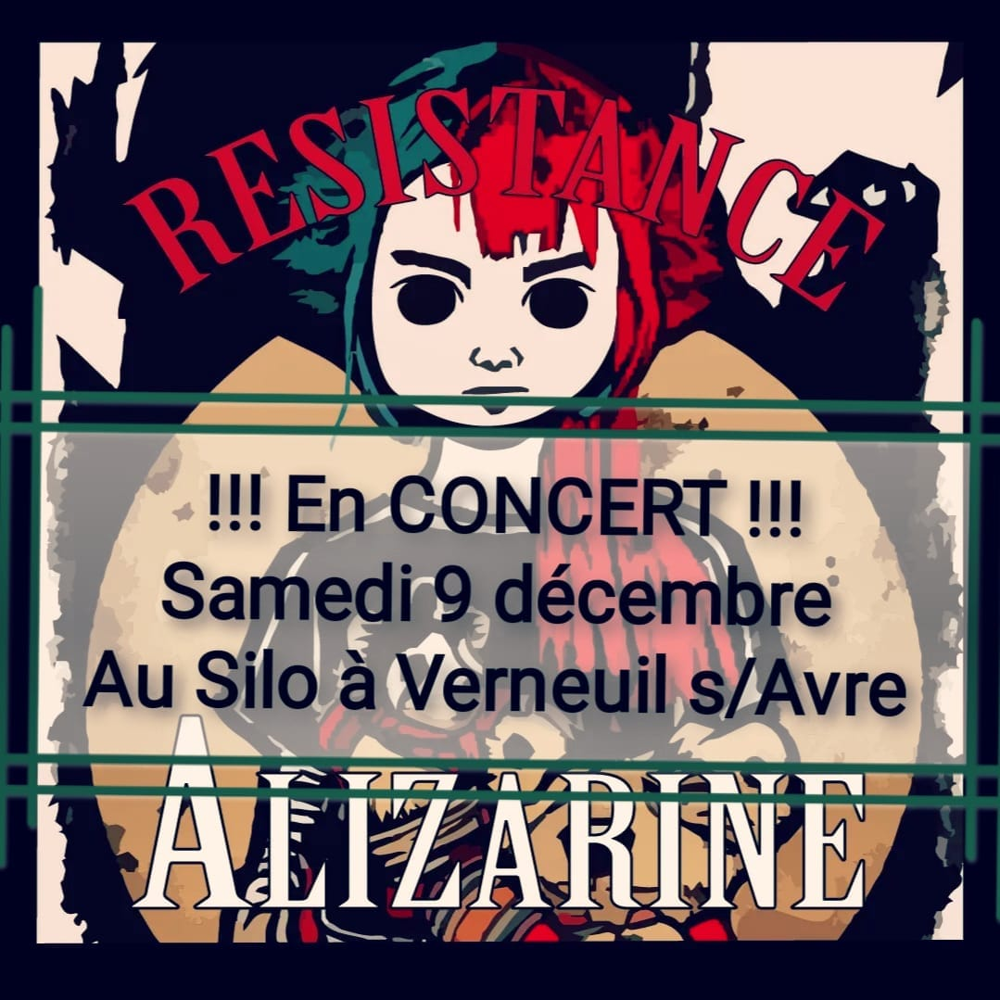
-
06 septembre 2023 : Rouen(76) - Nocturne, The Northmen
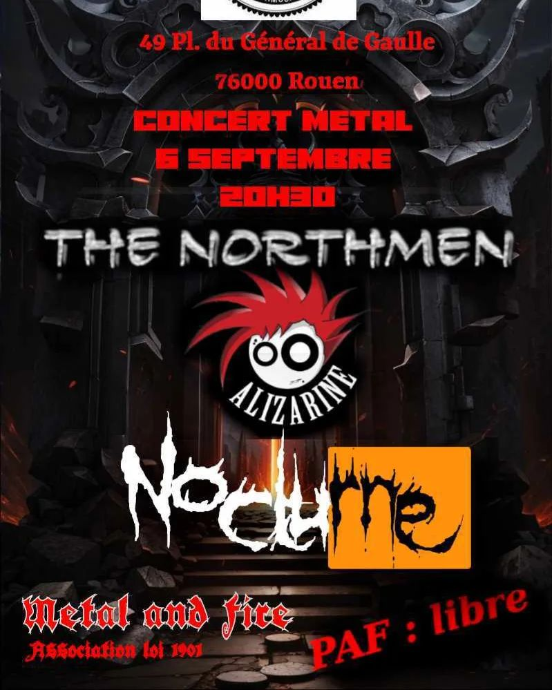
-
26 août 2023 : Le Fidelaire(27) - L'Aliza'Fest#1
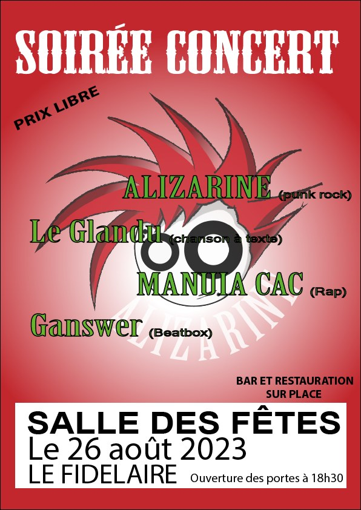
-
21 juin 2023 : Verneuil s/ Avre(27)
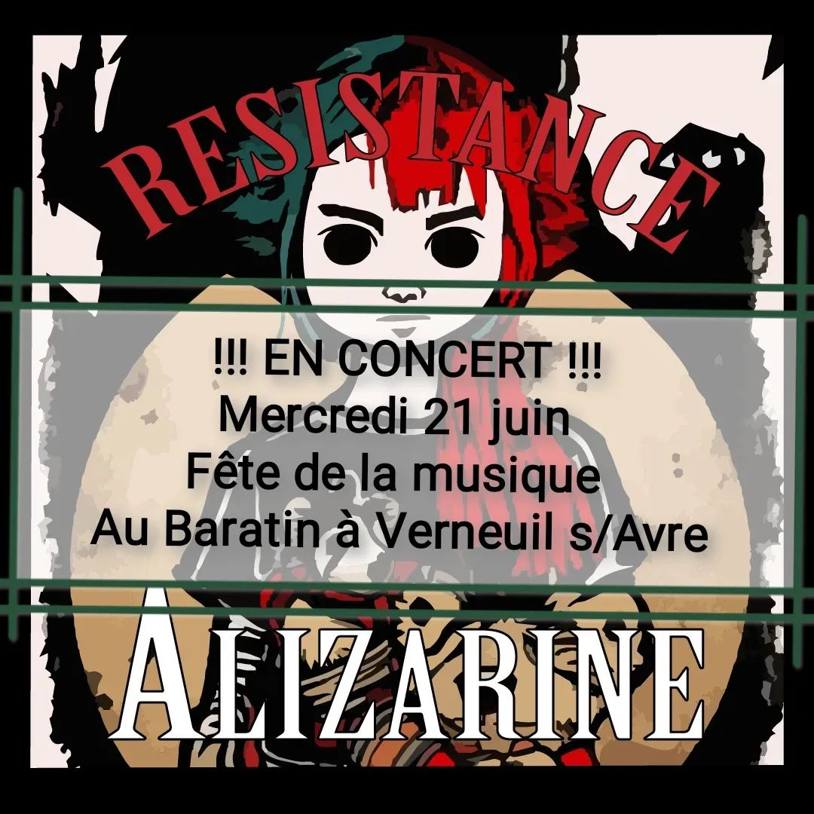
-
17 mai 2023 : Caen(14) - TAOS
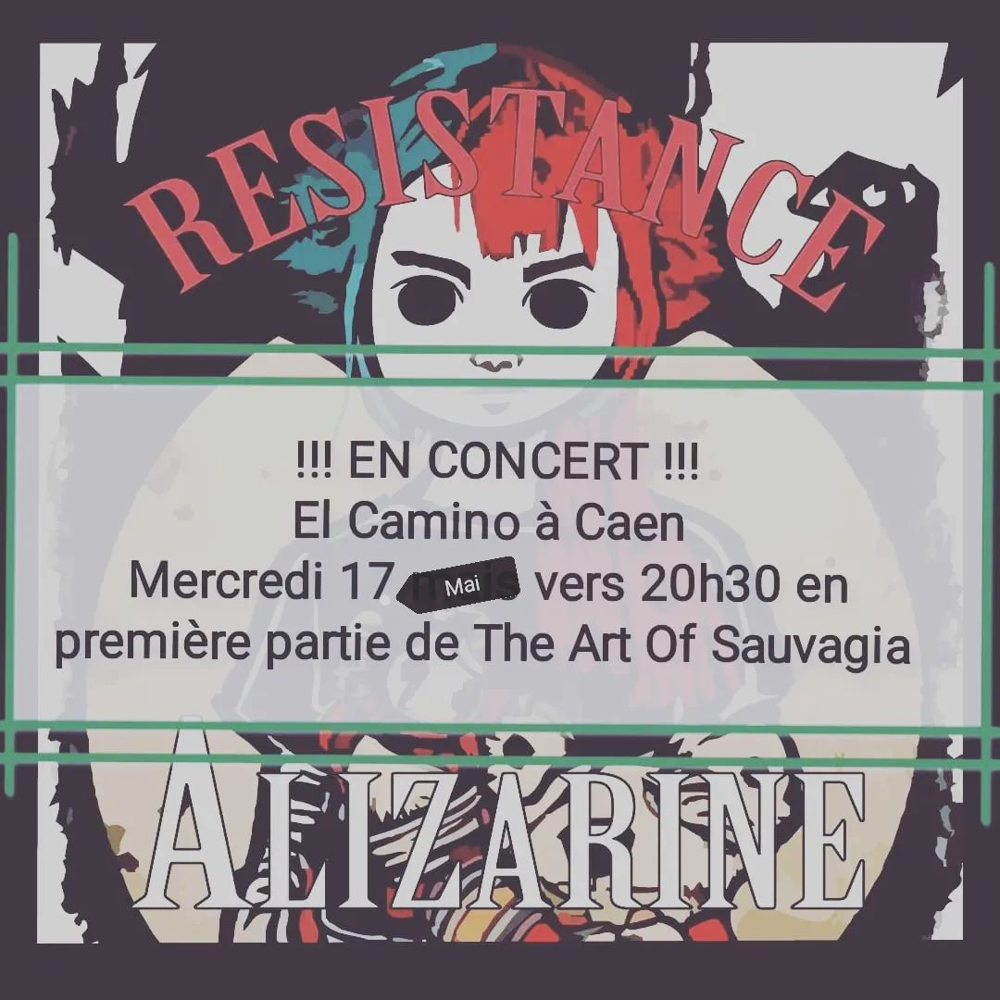
-
07 mai 2023 : Beaubray(27)
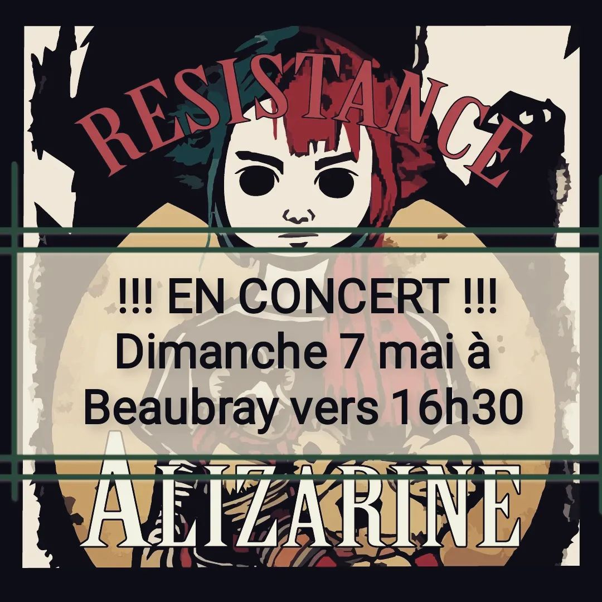
- 21 janvier 2023 : Verneuil s/ Avre(27) - El Coyoté, Mercimaisnomercy
-
26 octobre 2022 : Evreux(27) - Gang of Venus, Manuia CAC
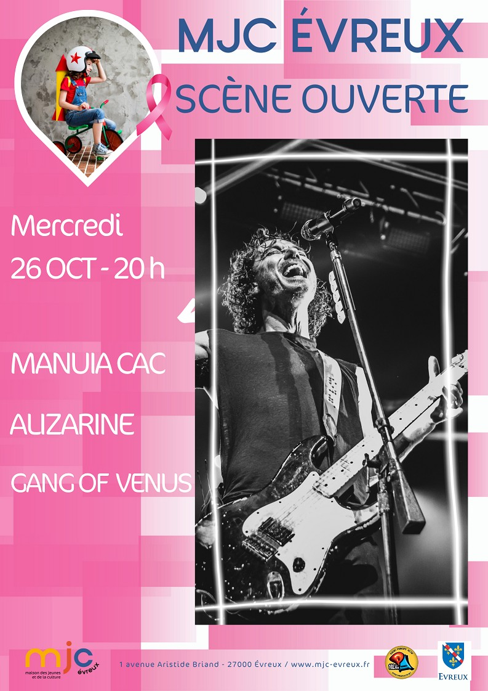